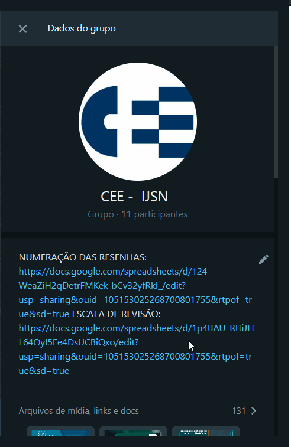
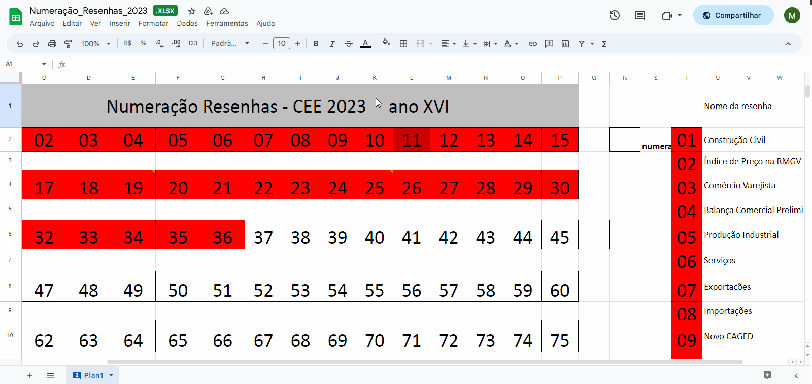
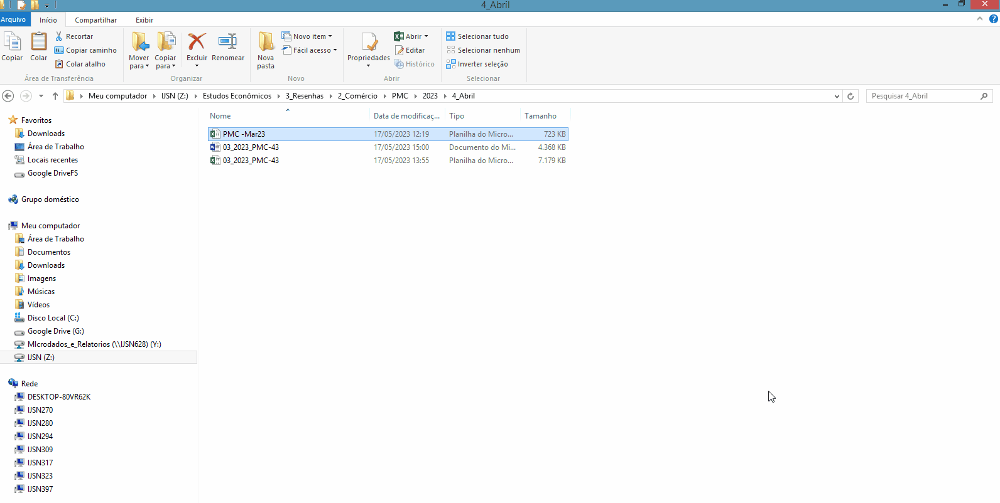
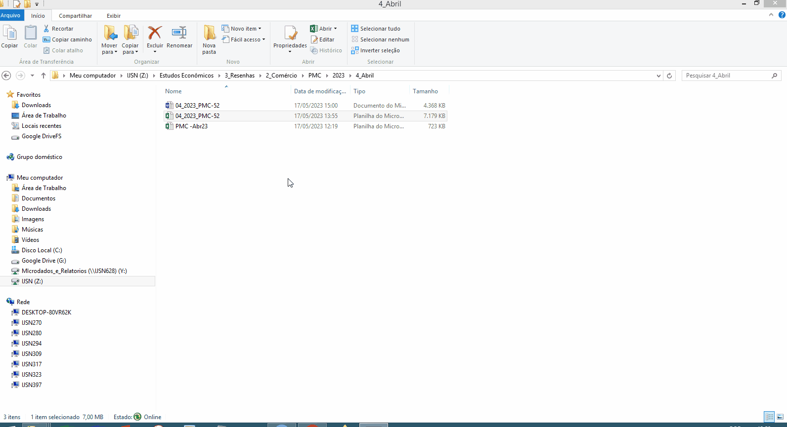
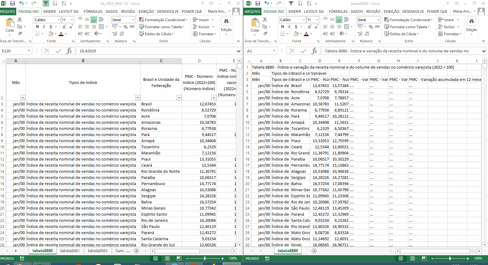
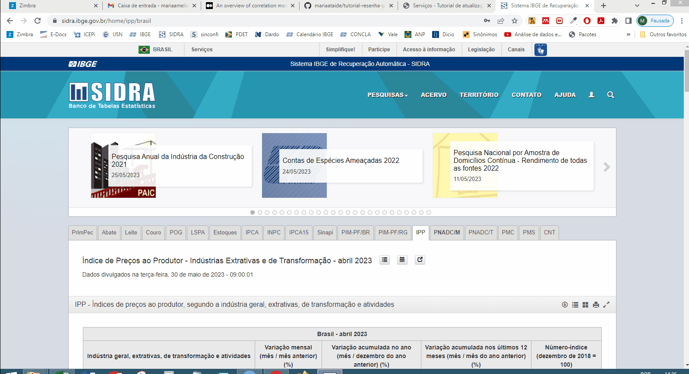
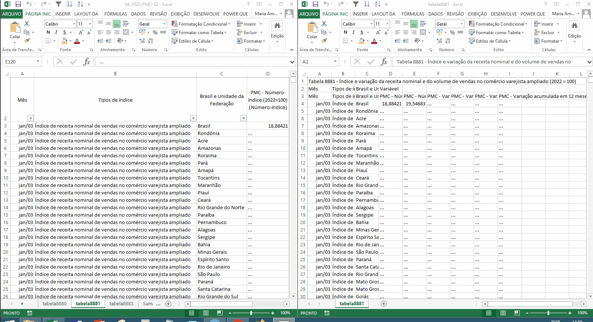
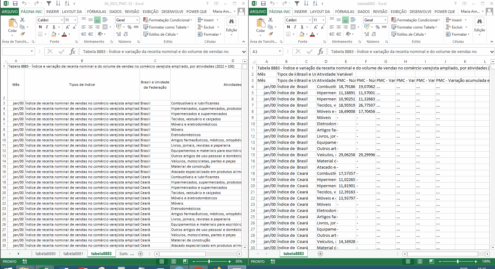
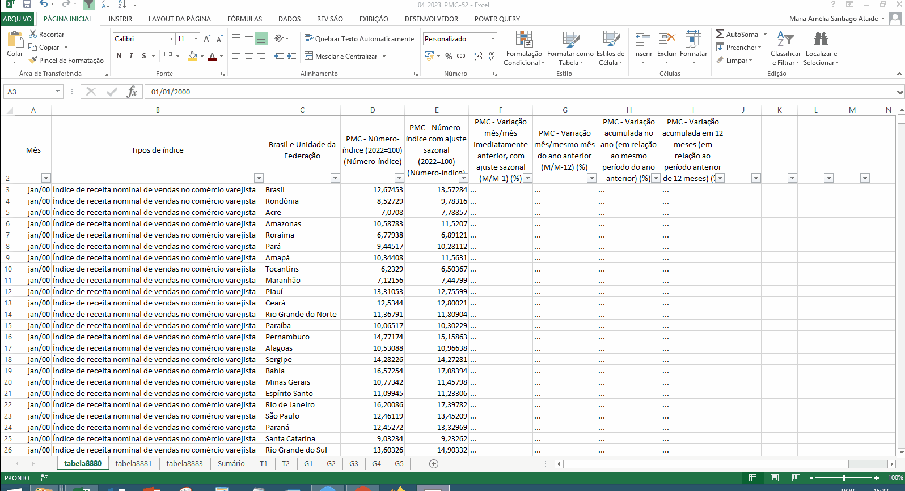

tutorial-resenha-pmc
Procedimentos iniciais
- Na pasta da resenha de serviços, crie uma subpasta para o mês de referência da resenha que será eleborada (Figure 1).
- Consulte a planilha de numeração das resenhas disponível na descrição do grupo de WhatsApp da CEE. Selecione o primeiro número que não está marcado em vermelho. Nas colunas ao lado da tabela de numeração, indique o número que você selecionou e o nome da resenha (Figure 2 e Figure 4).


- Renomeie os arquivos de acordo com o ano, mês e numeração da resenha, conforme Figure 3.

- Abra o arquivo Excel e reexiba as abas “tabela5906”, “tabela8688”, “tabela8693”, “tabela8694” e “Gráficos” (Figure 5).

Tabela 8880
- No site do SIDRA, utilize a lupa para encontrar a tabela 8880 (Figure 6).
- Em “Layout”, organize a tabela conforme figura Figure 6.
- Em “Variáveis”, selecione todas (Figure 6).
- Em “Tipo de índice”, selecione todos (Figure 6).
- Em “Mês”, selecione todos (Figure 6).
- Em “Unidade Territorial”, selecione Brasil e todas as Unidades da Federação (Figure 6).
- Para baixar a tabela, clique no botão “Download” e em “Formato”, selecione “CSV (BR)” e clique em “Download”. Atenção: a tabela deve ser baixada EXCLUSIVAMENTE no formato “CSV (BR)” (Figure 6).

- Copie os dados baixados e cole na aba “tabela8880” do arquivo Excel da resenha (Figure 7).

Tabela 8881
- No site do SIDRA, utilize a lupa para encontrar a tabela 8880 (Figure 8).
- Em “Layout”, organize a tabela conforme figura Figure 8.
- Em “Variáveis”, selecione todas (Figure 8).
- Em “Tipo de índice”, selecione todos (Figure 8).
- Em “Mês”, selecione todos (Figure 6).
- Em “Unidade Territorial”, selecione Brasil e todas as Unidades da Federação (Figure 8).
- Para baixar a tabela, clique no botão “Download” e em “Formato”, selecione “CSV (BR)” e clique em “Download”. Atenção: a tabela deve ser baixada EXCLUSIVAMENTE no formato “CSV (BR)” (Figure 8).
- Copie os dados baixados e cole na aba “tabela8880” do arquivo Excel da resenha (Figure 8).

- Copie os dados baixados e cole na aba “tabela8881” do arquivo Excel da resenha (Figure 9).

Tabela 8883
- No site do SIDRA, utilize a lupa para encontrar a tabela 8883 (?@fig-10).
- Em “Layout”, organize a tabela conforme figura ?@fig-10.
- Em “Variáveis”, selecione todas (?@fig-10).
- Em “Tipo de índice”, selecione todos (?@fig-10).
- Em “Atividades”, selecione todas (?@fig-10).
- Em “Mês”, selecione todos (?@fig-10).
- Em “Unidade Territorial”, selecione Brasil e todas as Unidades da Federação (?@fig-10).
- Para baixar a tabela, clique no botão “Download” e em “Formato”, selecione “CSV (BR)” e clique em “Download”. Atenção: a tabela deve ser baixada EXCLUSIVAMENTE no formato “CSV (BR)”. Na tabela 8883, como o arquivo possui mais de 200.000 observações, os dados precisam ser baixados a posteriori (?@fig-10).

- Copie os dados baixados e cole na aba “tabela8883” do arquivo Excel da resenha (Figure 10).

Tabelas e gráficos
- Após a atualização dos dados , copie da “tabela8880” os dados necessários para atualização do card e oculte as abas “tabela8880,”tabela8881” e “tabela8883”. Depois, vá na aba “Sumário” e selecione o mês de referência. Feito isso, todos os gráficos e tabelas do arquivo Excel serão atualizados automaticamente.
